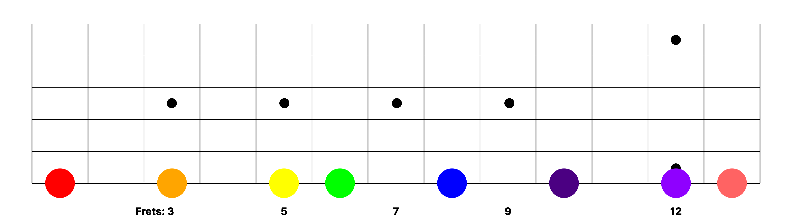
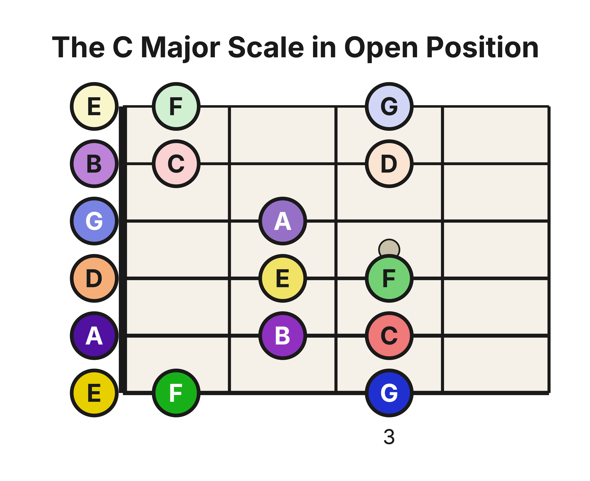
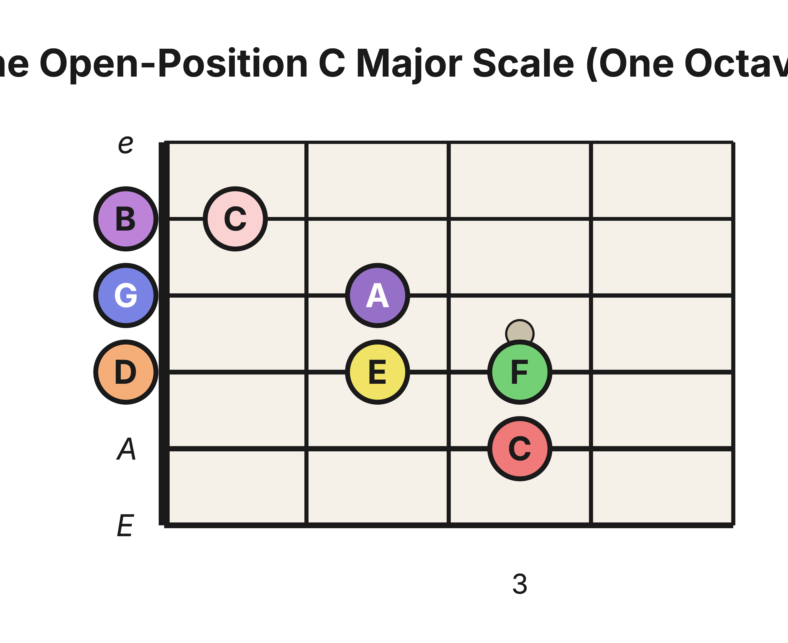

Level 2 · Chapter 12
The Fretboard: The C Major Scale in Open Position
You just finished the map. Six strings, every natural note, and the two new strings (G and B) now under your fingers. This chapter spends that memorization right away, on something you already know: the Major Scale.
Back in Level 1 you played the C Major Scale on a single string, as one long straight line up the neck. It followed the 221-2221 pattern, and it worked. But it was clumsy. Your hand had to leap two, four, twelve frets to get to the end.

There is a better way to play it. Fold it.
Folding the scale onto the neck
One string is great for seeing the pattern, but nobody plays music that way. Instead, we play a few notes on one string, then hop to the next string to keep the hand still. That hop is the whole trick, and it works because of how the guitar is tuned.
Remember from the last few chapters: the strings are tuned in Perfect 4ths. Each string is a Perfect 4th above the one below it. And a Perfect 4th is 5 half steps, ie. 5 frets.
So here is the payoff. Any note you would have to reach for high on one string is also sitting 5 frets lower on the next string up. It is the very same pitch. For example, A on the low E string is at the 5th fret. Hop up to the A string and there is that same A again, open — 5 frets lower, no reach.
That is the fold. When the scale wants to climb out from under your hand, don't climb. Hop to the next string and drop 5 frets. Same note, hand stays put.
The G→B corner is different
Here's the part that trips people up.
The strings are tuned in Perfect 4ths — all but one. You met the exception a couple of chapters ago: the gap from the G string to the B string is only a Major 3rd, not a Perfect 4th. And a Major 3rd is 4 half steps, ie. 4 frets.
So the fold still works at that corner, but it saves one fret less. Count it out. Hopping across any Perfect-4th gap drops you 5 frets. Hopping the G-to-B gap drops you only 4.
Watch what that one missing fret does to the scale. On the bass side, C sits low and easy — the A string, 3rd fret. When the scale climbs to the next C an octave up, you might expect it open on the B string. It isn't. Because the G→B fold saved only 4 frets instead of 5, that C lands one fret higher: the B string, 1st fret.
That little offset is the tuning anomaly showing its face again. It is the same G→B corner that will shift your chord shapes when you cross it. B–F was diminished for a different reason: the Major scale's half-step layout made that 5th come up one half step short. Two different facts, one familiar warning: always count it out.
Every scale note in open position
Now let's lay the whole thing out. Here is every note of the C Major Scale that lives in open position — frets 0 through 3, using the open strings — from the low E string all the way up to the high E. Every scale degree keeps its rainbow color from Level 1: Do is red, Re orange, Mi yellow, on up to Ti in purple, and the higher octaves are the same colors in a lighter shade.

Notice that the low E string and the high E string show the exact same three notes in the exact same spots: E, F, G at frets 0, 1, and 3. That is the free string again. The high E is the low E's lighter-shade twin, two octaves up, so anything you learn on one you have already learned on the other.
And notice the corner we just talked about. Trace the notes up the bass strings and across, and watch the picture jog up a fret the moment you land on the B string. That little step up is the G→B gap, drawn out for you to see.
The C-to-C octave
Buried inside that full picture is the scale most guitarists mean when they say "the open C scale": one clean octave, Do to Do, C to C.

Here is the roadmap. C (A string, 3rd fret), D (D string, open), E (D string, 2nd), F (D string, 3rd), G (G string, open), A (G string, 2nd), B (B string, open), and finally C (B string, 1st). Eight notes, three strings, and no stretch wider than your four fingers.
Play it slowly and say the degrees out loud as you go: C (Do), D (Re), E (Mi), F (Fa), G (So), A (La), B (Ti), C (Do). The eighth note is a lighter shade of the first — the octave, right where 221-2221 always lands it.
And you have read these notes before. Back in Part III, the standard-notation chapters walked you through the notes on each string right here in open position. This is that same neighborhood of the neck, now organized as one scale instead of one string at a time.
Hear it
Sing along as you play, up and then back down: Do, Re, Mi, Fa, So, La, Ti, Do — then Do, Ti, La, So, Fa, Mi, Re, Do, coming home. Those are the same syllables you trained by ear in Part IV. Your fingers are now finding what your ear already knows.
Track your progress
Use the same Progress Tracker and tempo method from Level 1. Start with the one-octave C-to-C scale as whole notes, ascending and descending, until it is clean and even. Then shorten the note values and raise the tempo, working from whole notes toward quarter notes. The goal mirrors your note-memorization goal from before: the C Major Scale in open position, up and down, played as quarter notes at 80 BPM, without any errors. Once that is solid, reach for the full open-position layout, low E to high E.
Try it yourself
Cover the diagrams and answer from memory.
- In open position, where is the C that sits an octave above the A-string C?
- Why isn't that higher C on an open string, like so many of the others?
- The low E string's scale notes are E, F, G at frets 0, 1, and 3. Where are those same three notes on the high E string?
- You are on F at the D string's 3rd fret. What is the next scale note, and where does the fold put it?
Answer key
- The B string, 1st fret.
- Because the G→B gap is a Major 3rd, not a Perfect 4th. The fold across it saves only 4 frets instead of 5, so the note lands one fret higher than open.
- The exact same spots: frets 0, 1, and 3. The high E is the low E's twin, two octaves up.
- G, on the G string, open. That crossing is a Perfect 4th, so the fold drops you a full 5 frets — from where G would sit at the D string's 5th fret down to the open G string.